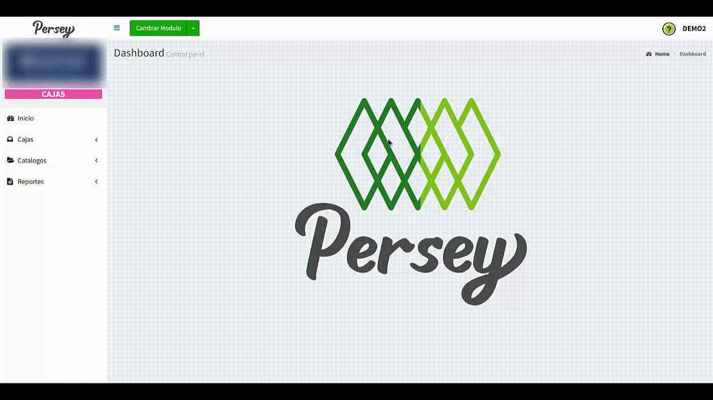
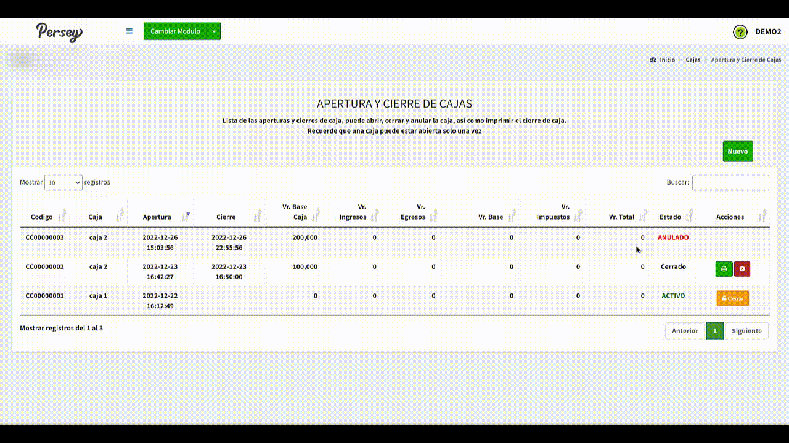
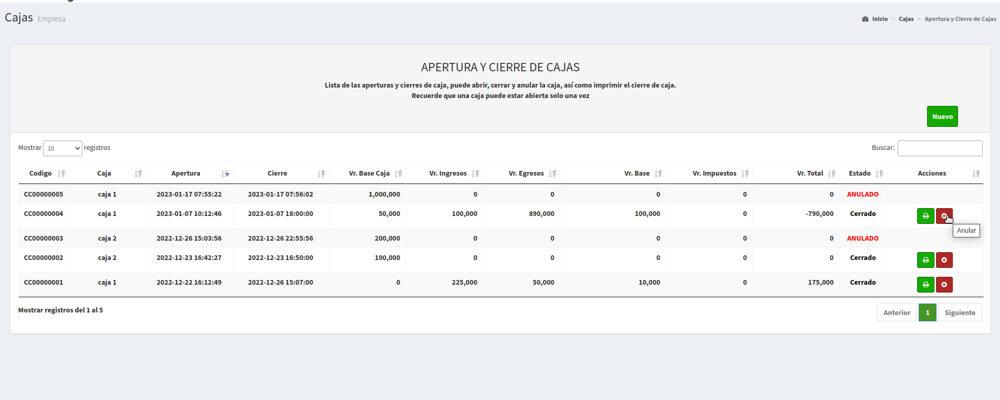
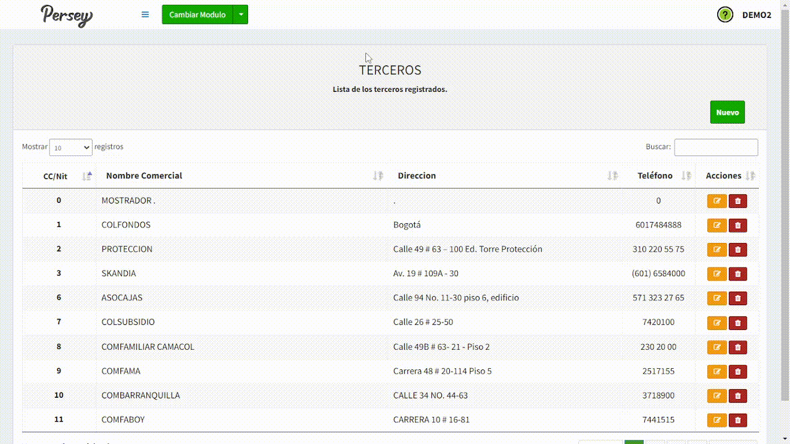
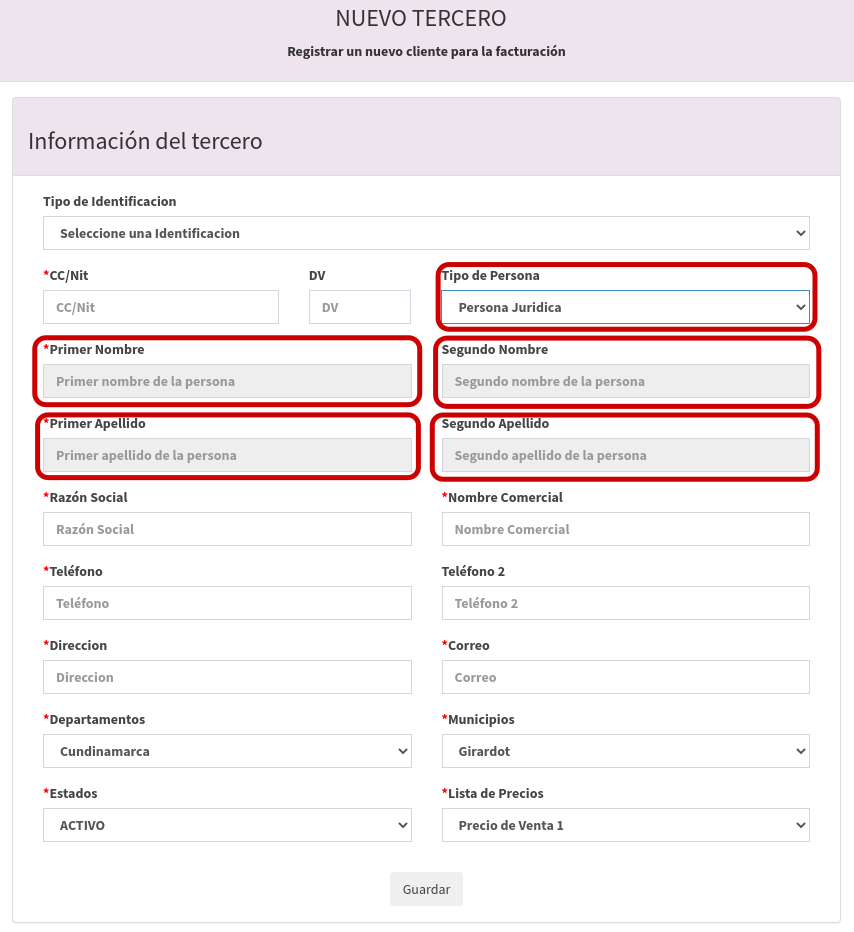
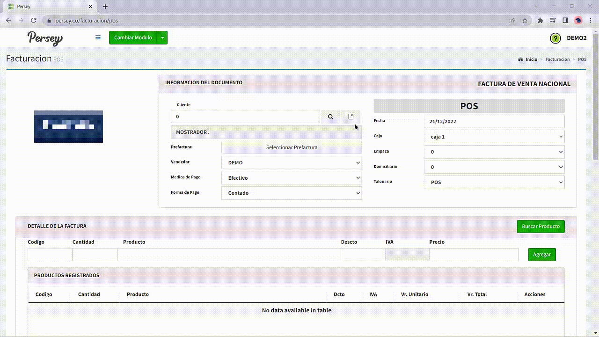

Primeros pasos
En el menú lateral izquierdo va a encontrar todas las opciones que usted va a poder realizar en el aplicativo de Persey.
Guia visual :


En el menú lateral izquierdo va a encontrar todas las opciones que usted va a poder realizar en el aplicativo de Persey.
Aquí encontrará la guia paso a paso sobre como crear una caja y las distintas interacciones que se pueden tener con esta sección.
Se debe dirigir hacia ell menú en la opcion de "Cajas", luego la opcion "Nueva Caja".
Sobre la parte derecha se debe dar click en un boton verde que dice "NUEVO"
Se debe proceder a escribir el nombre de la caja, posterior a ello, asignele un estado y proceda a "Guardar" como se muestra en el video.
Cabe aclarar que el usuario podrá eliminar o editar las cajas como se muestra en el video:

Despues de tener una caja creada, se tiene la posibilidad de cerrar la caja, si tiene mas disponibilidad de caja, tambien podrá aperturar cajas
Se debe mover hacia el menú, en la opción de "Cajas", luego la opcion "Apertura y Cierre" y si desea abrir una caja previamente creada, se debe oprimir el botón "Nuevo" y seleccionar la caja que desea aperturar como se ve en el video.

Se debe dirigir hacia el menú a la opcion de "Cajas", luego la opcion "Apertura y Cierre" y si desea cerrar una caja previamente creada oprima "Cerrar" y selecciona la caja que desea cerrar como se ve en el video

Como se observa en el video anterior, despues de cerrar una caja usted tambien tendrá la posibilidad de tener una visualización en PDF con la información de la caja y ademas anular su cierre.
Es trascendental que entienda que si desea abrir una caja nueva, debe verificar previamente que esa caja este cerrada para que no arroje un error.
Es trascendental que entienda que si desea anular una caja nueva, en caso de que tenga un error en alguna de ellas, lo puede hacer en la sección de "Apertura y Cierre de Cajas" dando al botón de "Anular" como lo muestra la siguiente imagen:
Se listarán los movimientos de la caja, además tendrá la posiblidad de cambiar su estado y por ultimo, cambiar la información respecto a los movimientos generados

En esta seccion podra configurar o definir diferentes aspectos de su negocio tales como, añadir terceros
Es de vital relevancia conocer que un tercero puede ser un cliente o un proveedor. Le aparecerán todos los terceros que tenga en una lista, los terceros se pueden modificar dando click en el boton amarillo y crear uno nuevo dando click en el boton que dice "NUEVO"
Por favor, los campos que tengan un asterisco (*), se deben llenar obligatoriamente.
Razón Social y Nombre Comercial: Tenga en cuenta que la razón social y el nombre comercial pueden ser diferentes dependiendo de la información de la empresa
Lista de Precios: Tenga en cuenta que la lista de precios es dependiente de la configuración de precios que asigno a los articulos y sus listas.
En caso de seleccionar "Persona Natural" se bloqueará el campo de "Razón Social".
A continuación, se mostrará la vista de como se bloquean los campos si selecciona "Persona Natural" y como diligenciar el formulario:


En caso de seleccionar "Persona Juridica" se bloquearán los campos de "Primer nombre de la persona", "Segundo nombre de la persona", "Primer apellido de la persona" y "Segundo apellido de la persona".
A continuación, se motrará la vista de como se bloquean los campos si selecciona "Persona Juridica" y como diligenciar el formulario:

Por ultimo, se ilustrará como crear un cliente:
Para agregar un tercero a su empresa debe darle en el boton que dice "NUEVO". Debe diligenciar el formulario con los campos correspondientes de izquierda a derecha, los campos que tienen un asterisco rojo son obligatorios. Cuando complete el formualario debe darle click en el boton que dice "GUARDAR"

Es de bien saber, que usted tambien tendrá la posibilidad de editar o eliminar un tercero como se observa en el video

En esta sección podrá revisar los reportes de los movimientos por "Periodo", "Cliente" y por "Tipo de Movimiento".
Se debe dirigir hacia la sección de "Reportes" y elegir la opción de "Movimientos por Periodo". Se deben escoger las fechas sobre las cuales quiere usted ver el reporte y posterior a ello oprima en "Ver"

En esta seccion se puede visualizar los reportes teniendo en cuenta un tercero y los tiempos a evaluar, para lo anterior se be ir a la opción "Movimientos por Cliente", elegir el tercero y sus tiempos a reportar para posteriormente oprimir en "Ver"
En esta seccion puede visualizar los reportes por tipo de movimiento y los tiempos a evaluar, para lo anterior se debe dirigir a la opción "Movimientos por Tipo de Movimiento", elegir el tipo de movimiento y sus tiempos a reportar para posteriormente oprimir en "Ver". Hay que tener en cuenta que tambien se podrá filtrar las lista con la opción de egresos si así lo requiere